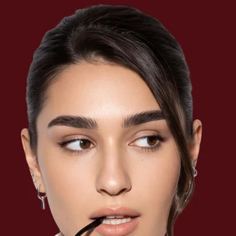

промты для расширения Claude в Chrome — бери и вставляй

Привет, я Лиза
4 года в графическом дизайне, 3 года — видеомейкер. А теперь собираю свою нейросистему: ИИ-агентов, которые полностью делают мой контент, ведут Telegram-канал и Instagram и сами всё публикуют, помогают семейному бизнесу и следят за моим здоровьем.
Эти промты я использую сама, когда разбираю свой блог. Забирай и пробуй.
@fridmanlizaveta
Хочешь больше таких промтов?
В канале я разбираю нейросети на практике: делюсь промтами, скиллами и полезной информацией, показываю, как работают мои ИИ-агенты, моя нейросистема и вся система изнутри.
Подписывайся, чтобы не пропустить новое:
сохрани гайд, чтобы не потерять
Claude — продукт компании Anthropic. Этот гайд — личный материал fridmanlizaveta и не является официальным материалом Anthropic.